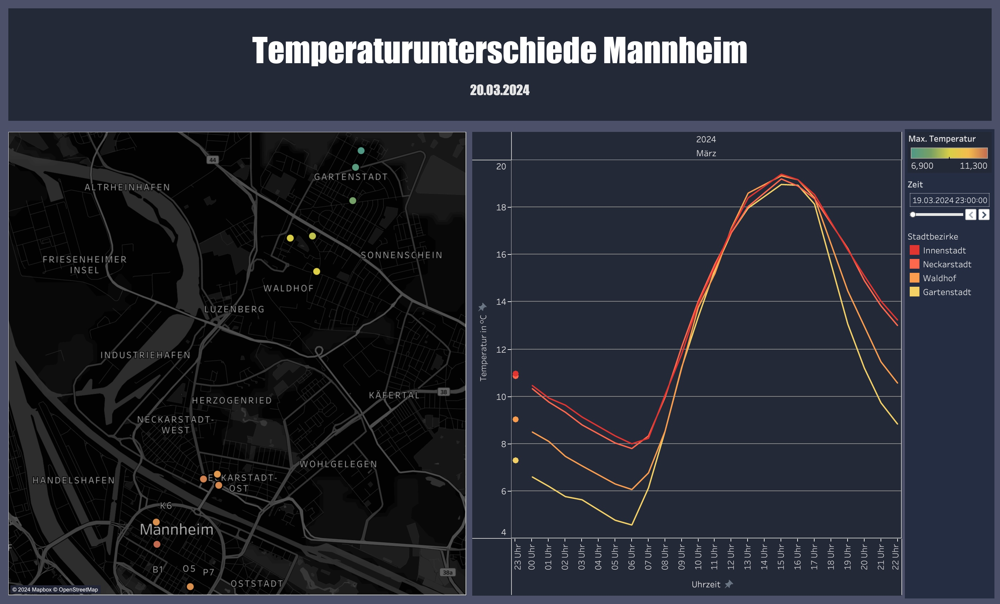
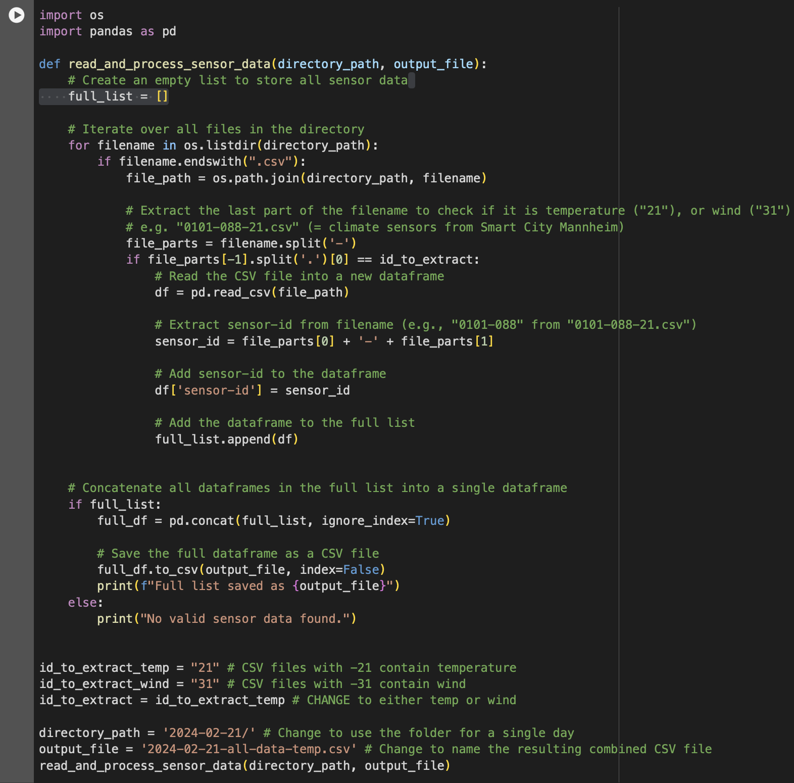
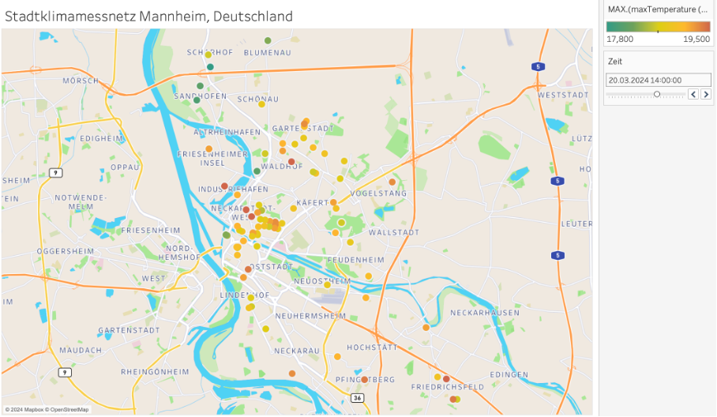
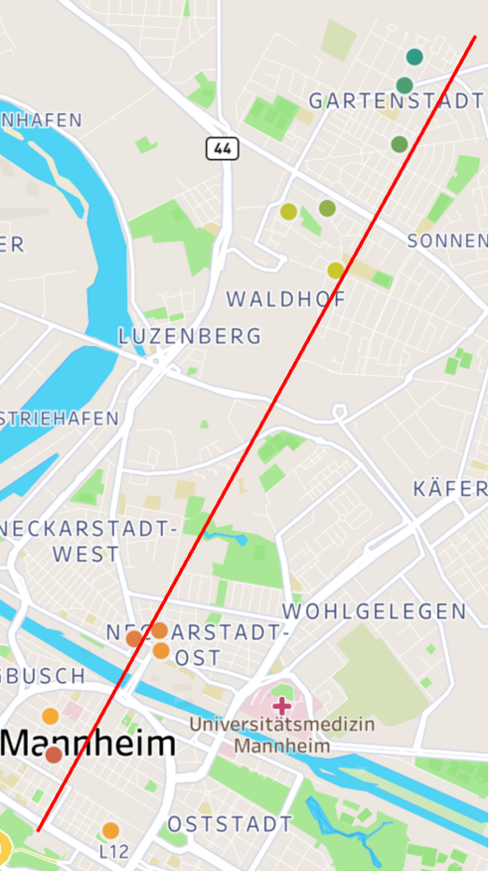
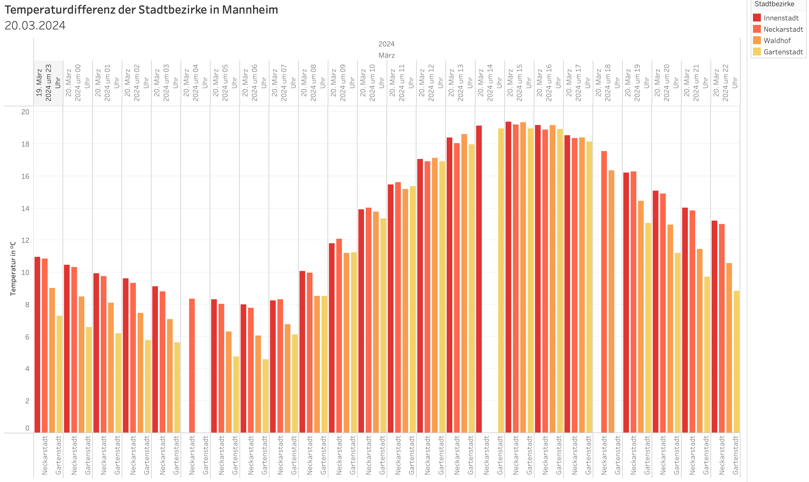
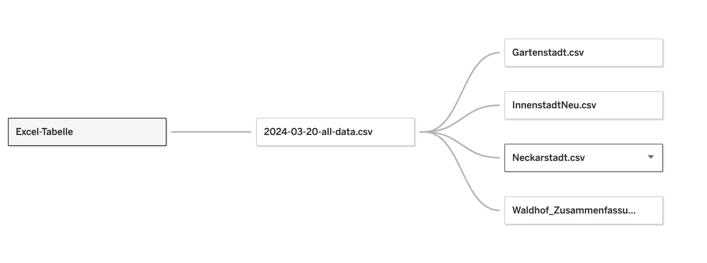
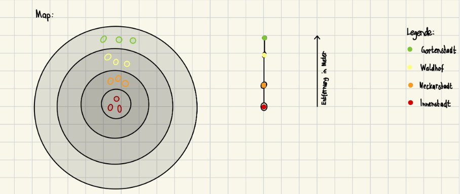
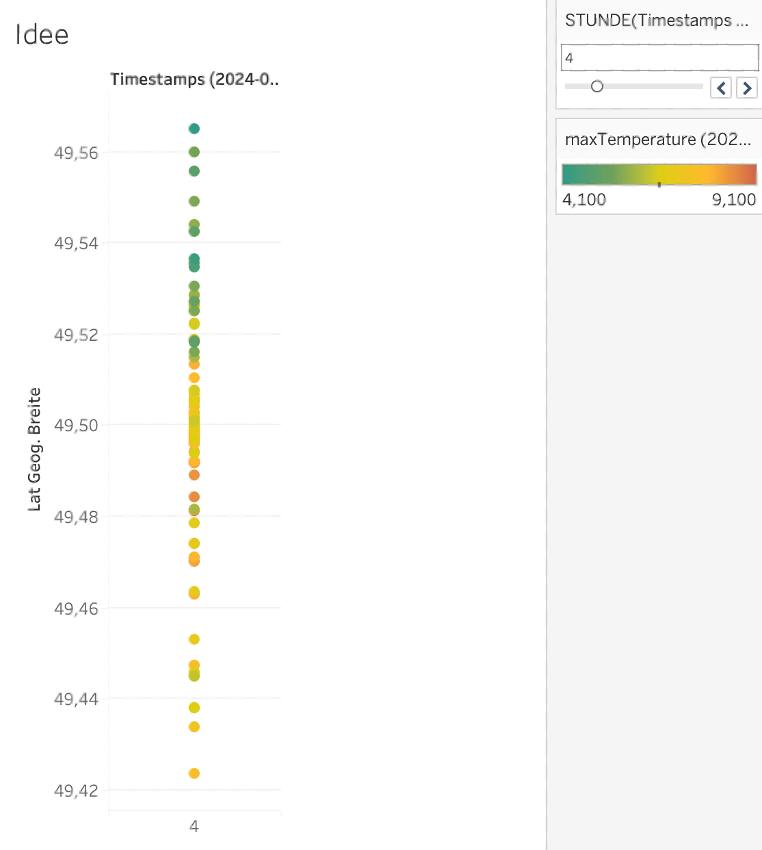

Abbildung 5: Prototyp Liniendiagramm
Abbildung 5: Prototyp Liniendiagramm
 Dashboard
Niklas
Mannheim - die Stadt mit den heißesten Temperaturen Deutschlands. In diesem Projekt wird untersucht, ob es mit zunehmender Entfernung zur Innenstadt Mannheims kühler wird. Mithilfe des Stadtklimanetzes Mannheims möchte ich herausfinden, ob und wie sich die Temperaturen mit zunehmender Entfernung zur Innenstadt in den einzelnen Stadtbezirken unterscheiden.
Im Rahmen der Vorlesung „Grundlagen der Datenvisualisierung“ an der Hochschule Mannheim, hatte jede Gruppe die Aufgabe, mit Klimadaten der Stadt Mannheim ein Projekt mit entsprechender Visualisierung zu erstellen. Durch eine vorher selbst ausgewählte These sollte mit Hilfe verschiedener Visualisierungstechniken eine angemessene und aussagekräftige Visualisierung erstellt werden.
Innerhalb meines Projektes wollte ich feststellen, ob die Temperatur in Mannheim mit zunehmender Entfernung zur Innenstadt immer kühler wird. Ebenfalls wollte ich herausfinden, wie sich die Temperatur im Verlauf eines Tages verhält. Gibt es Unterschiede zwischen Tag und Nacht? Anhand des Messnetzes von sMArt Mannheim, konnte ich dieser Frage genauer auf den Grund gehen.
Durch die zur Verfügung stehenden Daten des Metadatenkatalogs und des sMArt City Stadtklimanetzes Mannheims konnte ich mit der Datenanalyse beginnen.
Mit diesen seriösen Quellen hatte ich Zugriff auf alle Daten der verschiedenen Wetterstationen ab dem 20.02.2024. Diese Datensätze beinhalten wichtige Daten, wie beispielsweise die geographischen Koordinaten der einzelnen Messstationen, Messzeitpunkte, Temperatur, Luftfeuchtigkeit etc. Jeder Tag wird in einer eigenen zip-Datei veröffentlicht. In dieser zip-Datei wird für jeden Sensor jeweils eine csv-Datei erstellt, die alle Messwerte und Uhrzeiten beinhaltet. Mithilfe des Jupyter Notebooks in Abbildung 1, konnte ich die einzelnen csv-Dateien der Sensoren pro Tag in einer großen csv-Datei zusammenfassen.
 Abbildung 1: Jupyter Notebook
Durch das Programm Tableau konnten die verschiedenen Datenquellen miteinander verknüpft werden. Mit Tableau verschaffte ich mir erstmalig einen Überblick der verschiedenen Standorte aller Wettermessstationen, indem ich sie mir auf einer Karte anzeigen ließ (siehe Abbildung 2). Durch das Filtern der Messwerte gelang es mir, die Temperaturunterschiede der verschiedenen Uhrzeiten über einen Tag verteilt auf der Karte darzustellen. Um die eventuell auftretenden Temperaturunterschiede bei zunehmender Entfernung zur Innenstadt zu sehen, bildete ich für jeden Stadtbezirk eine Sensorgruppe aus jeweils drei Sensoren. Aufgrund von teilweise auftretenden Messfehlern entschied ich mich für nur drei Sensoren pro Stadtbezirk. Bei diesen Messfehlern wurde immer eine maximale Temperatur von -999°c angezeigt, was bei der Berechnung des Durchschnitts zu Problemen führte. Ich habe mich bewusst für den Durchschnitt und gegen den Median entschieden, da ich genauere Daten verwenden wollte. Um meine These untersuchen zu können, habe ich auf der Karte eine Linie durch die betroffenen Stadtbezirke gezogen, welche ebenfalls durch die einzelnen Sensorgruppen verläuft (siehe Abbildung 3). Für jede Sensorgruppen berechnete ich mithilfe von Tableau den Durchschnitt der maximalen Temperaturen zu jeder vollen Stunde. In den Testphasen meiner Visualisierung habe ich mit dem 20.03.2024 experimentiert. Hierbei stellte sich heraus, dass die Werte sehr aussagekräftig sind, weshalb ich mich entschied dieses Datum final zu wählen.
 Abbildung 2
 Abbildung 3
Bei meinem ersten Prototyp stellte ich in Tableau die durchschnittliche Maximaltemperatur der einzelnen Stadtbezirke in Form eines Balkendiagramms dar (siehe Abbildung 4). Hierbei war die Achsenbeschriftung zu unübersichtlich und es konnten nur alle Stadtbezirke auf der X-Achse angezeigt werden, indem das Diagramm vergrößert wurde. Dies hätte jedoch zur Folge gehabt, dass eine Gesamtübersicht über den Verlauf eines Tages nicht mehr möglich gewesen wäre, da hierfür nach links bzw. rechts gescrollt werden müsste. Aufgrund dessen entschied ich mich für ein Liniendiagramm, welches den Temperaturverlauf der verschiedenen Stadtbezirke über einen Tag verteilt darstellt (siehe Abbildung 5).
 Abbildung 4: Prototyp Balkendiagramm
Abbildung 5: Prototyp Liniendiagramm
Um die Temperaturdifferenz mit Hinblick auf den Zeitlichen Verlauf über einen Tag bestmöglich darzustellen, wurde wie bereits erwähnt, ein Liniendiagramm (siehe Abbildung S) gewählt. Ein Liniendiagramm eignet sich hier besonders gut, da es die angemessenste Visualisierung für einen kontinuierlichen Zeitverlauf darstellt und die These am besten verdeutlicht. Um das Diagramm einfach und überschaubar darzustellen, entschied ich mich für ein kontinuierliches Farbschema. Der Stadtbezirk mit den höchsten maximalen Temperaturen, wird in dem Farbverlauf mit der dunkelsten Farbe dargestellt. Je niedriger die maximale Temperatur der Stadtbezirke ist, desto heller ist auch die Farbe des Stadtbezirks. Um den räumlichen Temperaturverlauf mit zunehmender Entfernung zu Innenstadt zu verdeutlichen, wurde das Liniendiagramm mit der geografischen Karte im Dashboard verknüpft (siehe Video 1). Durch das Ändern der Uhrzeit im Filter kann somit genau gezeigt werden, wo und wann welche maximalen Temperaturen anliegen.
Wie bereits erwähnt, wurde die Visualisierung ausschließlich mit Tableau erstellt. Da wir während des Semesters schon viel mit Tableau arbeiteten und ich dort schon Erfahrungen mit dem Programm sammelte, war dies für mich das naheliegendste Programm bei der Programmauswahl. Um erstmalig Daten visualisieren zu können, mussten zu Beginn Änderungen in der Excel-Tabelle des Metadatenkatalogs vorgenommen werden. Es musste eine zusätzliche Spalte hinzugefügt werden, die den Namen Sensor-ID trägt. In dieser Spalte musste die Messnetznummer und die Stations-ID zusammengefügt werden. Dadurch kann die csv-Datei des 20.03.2024 über die Sations-ID mit der Excel-Tabelle verknüpft werden. Zusätzlich gibt es noch einen Fehler in der Excel-Tabelle bei den Spalten Längen- und Breitengrad. Der Wert der Spalteninhalte muss jeweils durch die Zahl 1000000 dividiert werden, damit die Sensoren am richtigen geographischen Ort angezeigt werden. Mit diesen Änderungen kann anschließend die Excel-Tabelle mit den zuvor zusammengefassten Daten des Jupyter Notebooks verknüpft werden. Anschließend werden einzelne Gruppen für die verschiedenen Stadtbezirke erstellt. Für jeden Stadtbezirk berechnete ich über Tableau den Durchschnitt der maximalen Temperatur zur vollen Stunde und erstellte daraus jeweils ein Liniendiagramm pro Blatt für jeden Stadtbezirk. Aus jedem Liniendiagramm kann dann pro Stadtteil eine eigene csv-Dateien erstellt werden, die die Daten der Sensor-ID’s, der maximalen Durchschnittstemperaturen und der Timestamps beinhaltet. Diese einzelnen csv-Dateien konnten über die Timestamps mit der csv-Datei des 20.03.2024 verknüpft werden, welche alle Daten des Tages beinhaltet. Zur Veranschaulichung ist diese Verknüpfung nochmals in der Abbildung 6 zu sehen. Durch diese einzeln erstellten Datensätze ist es möglich, alle vier Stadtbezirke zusammen in einem Liniendiagramm darzustellen.
 Abbildung 6: Datenverknüpfung
Anhand des Liniendiagramms in Abbildung 7 sind viele Erkenntnisse über den Temperaturverlauf und die Temperaturdifferenz mit zunehmender Entfernung zur Innenstadt zu sehen. Alle Temperaturen in den vier Stadtbezirken folgen einem ähnlichen Tagesmuster. Die niedrigste Temperatur wurde um 6 Uhr in der Gartenstadt erreicht, während die höchste Temperatur um 15 Uhr in der Innenstadt gemessen wurde. Nachts zwischen 23Uhr und 6Uhr sinken die Temperaturen in allen Stadtbezirken, wobei die Innenstadt und die Neckarstadt durchgehend höhere Temperaturen aufweisen. Die Gartenstadt bleibt am kühlsten. So hat man beispielsweise um 0Uhr eine Temperaturdifferenz von 4,5°C zwischen der Innenstadt und der Gartenstadt (siehe Abbildung 8). In diesem Zeitbereich ist zu erkennen, dass die Temperatur mit zunehmender Entfernung zur Innenstadt kühler wird. Zwischen 6Uhr und 10Uhr ist ein rascher Temperaturanstieg in allen Stadtbezirken zu sehen, was auf den Sonnenaufgang um 6:28Uhr zurückzuführen ist. Von 10Uhr bis 15Uhr ist die Differenz der Temperaturen in allen Stadtbezirken am geringsten. Ab 15Uhr nimmt die Temperatur dann in allen Stadteilen wieder langsam ab. Die Temperaturdifferenz der einzelnen Stadtbezirke vergrößert sich stündlich. Die Abkühlung in Waldhof und vor allem in der Gartenstadt verläuft schneller als in der Innen- und Neckarstadt. Um 21Uhr ist eine Temperaturdifferenz von 5,5°C zwischen Innen- und Gartenstadt messbar (siehe Abbildung 9). Auch hier bestätigt sich wieder, dass die Temperatur mit zunehmender Entfernung zur Innenstadt kühler wird. Zusammenfassend lässt sich sagen, dass die Temperaturverläufe in den verschiedenen Stadtbezirken Mannheims deutliche Unterschiede aufweisen, die auf die städtebaulichen und geografischen Besonderheiten hinweisen. Mit zunehmender Entfernung zur Innenstadt nehmen die Temperaturen ab, was auf eine dichtere Bebauung und weniger Grünflächen in der Innenstadt zurückzuführen ist. Im Gegensatz dazu ist in Waldhof und der Gartenstadt aufgrund der höheren Anzahl an Grünflächen und einer geringeren Bebauung eine geringere Temperatur vorzufinden. Zwischen 17Uhr und 6Uhr sind die Temperaturunterschiede am deutlichsten. Tagsüber hingegen ist nur ein wesentlich geringerer Temperaturunterschied vorzufinden.
 Abbildung 7
Abbildung 7
 Abbildung 8
Abbildung 8
 Abbildung 9
Abbildung 9
Durch meine Visualisierung konnte ich feststellen, dass die Temperatur in Mannheim mit zunehmender Entfernung zur Innenstadt sinkt. Zudem wurde deutlich, dass die Temperaturunterschiede gegen Abend immer größer werden, während sie mittags eher gering ausfallen. Besonders interessant ist hierbei, dass die Temperatur in der Spitze einen Unterschied von 5,5°C aufweist, obwohl die Entfernung zur Innenstadt nur 5,5 km Luftlinie beträgt. Meine Visualisierung ermöglichte es, die These präzise zu überprüfen und führte zu einem aufschlussreichen Ergebnis.
Ich habe noch eine weitere Idee für die Visualisierung entwickelt. Bei dieser neuen Darstellung wird zusätzlich die Entfernung der Sensoren zur Innenstadt visualisiert, indem die Sensoren sowohl auf einer Linie als auch in Ringen um ein Zentrum angeordnet werden. Auf diese Weise kann man den Verlauf der Temperatur mit zunehmender Entfernung besonders anschaulich nachvollziehen. In der Abbildung 10 und der Abbildung 11 ist diese Idee zur besseren Veranschaulichung dargestellt. Zusätzlich wäre es interessant zu sehen, wie sich die Temperaturunterschiede in anderen Monaten verhalten.
 Abbildung 10: Skizze
 Abbildung 11: Idee